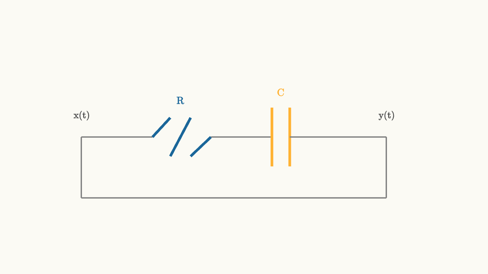

Circuits Speak In Signals
Here is a puzzle worth sitting with for a moment. Your FM radio receiver is surrounded by thousands of radio stations broadcasting simultaneously. Each station transmits its signal through the air, and all of those signals arrive at your antenna at the same instant. They pile on top of each other in one messy superposition. Yet when you turn the dial to 101.5 MHz, you hear only that one station, cleanly, without anything bleeding in from the station at 101.7 MHz right next door.
How does a collection of resistors, capacitors, and inductors perform what sounds like a miracle of selectivity?
The answer lives in a language that transforms circuit diagrams into mathematical objects, and it starts with one simple reframe: voltage and current are functions of time.
That shift in perspective, from static labels on a schematic to time-varying signals, opens the door to everything in this series. Impulse responses, convolution, Laplace transforms, frequency response, filters, sampling, and feedback all follow naturally once you accept that language.
Signals as Time Functions
A signal is simply a quantity that varies with time. The voltage at a point in a circuit is a signal. The current through a wire is a signal. The acoustic pressure of sound is a signal. The brightness of a pixel as a video plays is a signal.
We write signals as functions: $x(t)$ for an input, $y(t)$ for an output. The independent variable $t$ runs over all time, or over whatever interval is relevant. The function value at each moment tells you the instantaneous level of that quantity.
source
background = [0.985, 0.98, 0.955, 1]
camera = Camera(4.8b)
"signals as functions"
mesh axes = block {
. stroke{GRAY, 1.5} Line(start: [-3.2, 0, 0], end: [3.2, 0, 0])
. stroke{GRAY, 1.5} Line(start: [-3.2, -1.8, 0], end: [-3.2, 1.8, 0])
. center{[3.0, -0.28, 0]} color{GRAY} Text("t", 0.68)
. center{[-2.9, 1.6, 0]} color{GRAY} Text("x(t)", 0.68)
}
mesh sig1 = stroke{BLUE, 3} ExplicitFunc(|t| 0.85 * sin(1.8 * t) + 0.3 * sin(4.2 * t + 0.5), [-3.0, 3.0, 300])
mesh label1 = color{BLUE} center{[1.6, 1.55, 0]} Text("audio signal", 0.72)
play Write(1.0)
"another signal"
mesh sig2 = stroke{ORANGE, 3} ExplicitFunc(|t| 0.7 * exp(-0.4 * t * t) * cos(6.0 * t), [-3.0, 3.0, 300])
mesh label2 = color{ORANGE} center{[1.6, -1.55, 0]} Text("radar pulse", 0.72)
play Fade(0.8)
"both together"
mesh combined = stroke{GREEN, 3} ExplicitFunc(|t| 0.6 * sin(1.8 * t) + 0.22 * sin(4.2 * t + 0.5) + 0.5 * exp(-0.4 * t * t) * cos(6.0 * t), [-3.0, 3.0, 300])
mesh clabel = color{GREEN} center{[-1.5, 1.65, 0]} Text("both arrive at the antenna", 0.72)
play Write(0.9)The signal view is liberating because it lets you think about what a circuit does to information over time, not just how much voltage it delivers in steady state.
A Circuit Is a System
In this language, a circuit becomes a system: a rule that takes an input signal and produces an output signal. We draw it as a box with an arrow in and an arrow out.
The RC circuit is the perfect first example. Connect a resistor and capacitor in series, apply a voltage source $x(t)$ at the input, and measure the voltage across the capacitor as the output $y(t)$.

source
background = [0.985, 0.98, 0.955, 1]
camera = Camera(4.8b)
mesh diagram = block {
. stroke{GRAY, 2} Line(start: [-3.2, 0, 0], end: [-1.8, 0, 0])
. stroke{BLUE, 4} Line(start: [-1.8, 0, 0], end: [-1.45, 0.38, 0])
. stroke{BLUE, 4} Line(start: [-1.45, -0.38, 0], end: [-1.05, 0.38, 0])
. stroke{BLUE, 4} Line(start: [-1.05, -0.38, 0], end: [-0.65, 0, 0])
. stroke{GRAY, 2} Line(start: [-0.65, 0, 0], end: [0.55, 0, 0])
. stroke{ORANGE, 4} Line(start: [0.55, -0.58, 0], end: [0.55, 0.58, 0])
. stroke{ORANGE, 4} Line(start: [0.9, -0.58, 0], end: [0.9, 0.58, 0])
. stroke{GRAY, 2} Line(start: [0.9, 0, 0], end: [2.8, 0, 0])
. stroke{GRAY, 2} Line(start: [-3.2, 0, 0], end: [-3.2, -1.2, 0])
. stroke{GRAY, 2} Line(start: [2.8, 0, 0], end: [2.8, -1.2, 0])
. stroke{GRAY, 2} Line(start: [-3.2, -1.2, 0], end: [2.8, -1.2, 0])
. center{[-1.25, 0.72, 0]} color{BLUE} Text("R", 0.72)
. center{[0.72, 0.88, 0]} color{ORANGE} Text("C", 0.72)
. center{[-3.2, 0.42, 0]} color{DARK_GRAY} Text("x(t)", 0.68)
. center{[2.8, 0.42, 0]} color{DARK_GRAY} Text("y(t)", 0.68)
}
"rc circuit as a system"
play Fade(0.8)Kirchhoff's voltage law says the applied voltage is the sum of voltages across the resistor and the capacitor:
The capacitor law relates current to the rate of change of stored voltage:
With the output defined as $y(t) = v_C(t)$, substituting the capacitor law into the voltage equation gives:
Pause on that for a moment. A physical object made of a resistor and a capacitor became a differential equation connecting an input function to an output function. That is the first major translation. The circuit's behavior is now a mathematical rule.
The Time Constant Is Memory
The product $RC$ appears in that equation with units of seconds. This is called the time constant, written $\tau = RC$.
The time constant is not just a scaling factor. It tells you how long the circuit remembers the past. A circuit with $\tau = 1$ second remembers inputs from about a second ago with noticeable weight. A circuit with $\tau = 1$ microsecond forgets almost instantly.
You can see this in the step response, what the circuit outputs when the input jumps from zero to a constant value at $t = 0$:
source
param tau = 1.0
background = [0.985, 0.98, 0.955, 1]
camera = Camera(4.8b)
"step response"
mesh axes = block {
. stroke{GRAY, 1.5} Line(start: [-3.2, -1.5, 0], end: [3.2, -1.5, 0])
. stroke{GRAY, 1.5} Line(start: [-3.2, -1.5, 0], end: [-3.2, 1.5, 0])
. center{[3.0, -1.75, 0]} color{GRAY} Text("t", 0.68)
}
mesh step_in = stroke{GRAY, 2} ExplicitFunc(|t| 1.05, [0.0, 3.0, 2])
mesh response = stroke{BLUE, 3.5} ExplicitFunc(|t| 1.05 * (1 - exp(-t / $tau)), [0.0, 3.0, 300])
mesh tlabel = color{BLUE} center{[0, 1.7, 0]} Text("RC = tau, bigger tau = slower climb", 0.72)
play Write(1.0)
"change tau"
tau = 2.0
response = stroke{ORANGE, 3.5} ExplicitFunc(|t| 1.05 * (1 - exp(-t / $tau)), [0.0, 3.0, 300])
play Lerp(1.2)Drag the parameter and watch the exponential climb stretch or compress. Large $RC$ means a sluggish response. Small $RC$ means quick response. The circuit's physical components are encoding a time scale into the mathematics.
This already hints at something deep: the time constant is really telling you which input frequencies the circuit can track. Fast signals, those that change quickly compared to $\tau$, find the circuit unresponsive. Slow signals, those that change on timescales much longer than $\tau$, see the circuit as a willing follower.
That connection between time and frequency is one of the great threads running through this entire series.
What Linearity Actually Buys You
The differential equation we derived is linear. This word gets used casually, but it carries enormous weight. Precisely, the system is linear when two conditions hold:
Scaling: if input $x(t)$ produces output $y(t)$, then input $a \cdot x(t)$ produces output $a \cdot y(t)$.
Superposition: if input $x_1(t)$ produces output $y_1(t)$ and input $x_2(t)$ produces output $y_2(t)$, then input $x_1(t) + x_2(t)$ produces output $y_1(t) + y_2(t)$.
Together: scaling plus superposition means the system respects linear combinations. Input $a x_1(t) + b x_2(t)$ always produces output $a y_1(t) + b y_2(t)$.
source
background = [0.985, 0.98, 0.955, 1]
camera = Camera(4.8b)
"two input signals"
mesh axes = block {
. stroke{GRAY, 1.2} Line(start: [-3.2, 0, 0], end: [3.2, 0, 0])
. stroke{GRAY, 1.2} Line(start: [-3.2, -1.9, 0], end: [-3.2, 1.9, 0])
}
mesh sig1 = stroke{BLUE, 3} ExplicitFunc(|t| 0.7 * sin(1.8 * t), [-3.0, 3.0, 280])
mesh sig2 = stroke{ORANGE, 3} ExplicitFunc(|t| 0.45 * sin(4.5 * t + 0.6), [-3.0, 3.0, 280])
mesh lbl1 = color{BLUE} center{[-1.5, 1.1, 0]} Text("x1(t)", 0.72)
mesh lbl2 = color{ORANGE} center{[1.5, -1.55, 0]} Text("x2(t)", 0.72)
play Write(1.0)
"their sum"
mesh summed = stroke{GREEN, 3.5} ExplicitFunc(|t| 0.7 * sin(1.8 * t) + 0.45 * sin(4.5 * t + 0.6), [-3.0, 3.0, 280])
mesh slbl = color{GREEN} center{[0, 1.75, 0]} Text("x1(t) + x2(t)", 0.72)
play Fade(0.8)
"linearity promise"
mesh note = color{DARK_GRAY} center{[0, -1.75, 0]} Text("circuit output is y1(t) + y2(t) - analyze each piece separately", 0.68)
play Fade(0.7)Why does this matter so much? Because it gives you a superpower: you can decompose complicated inputs into simpler pieces, analyze each piece separately, and add up the results.
Think about the radio example from the beginning. Thousands of stations arrive at once. Each station is a sinusoid at its own frequency. Because the circuit is linear, the circuit's response to all of them simultaneously is the sum of its responses to each one individually.
If you can understand what the circuit does to a single sinusoid, you understand what it does to everything. That is why sinusoids and complex exponentials become so central to circuit analysis.
Time Invariance Closes the Deal
There is one more property that completes the picture. Real physical circuits made of fixed resistors, capacitors, and inductors behave the same way regardless of when you run the experiment.
Formally: if input $x(t)$ produces output $y(t)$, then the delayed input $x(t - t_0)$ produces the delayed output $y(t - t_0)$.
This is called time invariance. The circuit does not know or care what time it is. Shift the input in time and the output shifts by exactly the same amount.
source
background = [0.985, 0.98, 0.955, 1]
camera = Camera(4.8b)
"original"
mesh axes = block {
. stroke{GRAY, 1.2} Line(start: [-3.2, -1.4, 0], end: [3.2, -1.4, 0])
. stroke{GRAY, 1.2} Line(start: [-3.2, -1.4, 0], end: [-3.2, 1.6, 0])
}
mesh orig_in = stroke{BLUE, 3} ExplicitFunc(|t| 0.8 * exp(-0.6 * (t + 1.0) * (t + 1.0)), [-3.0, 3.0, 280])
mesh orig_out = stroke{ORANGE, 3} ExplicitFunc(|t| 0.65 * exp(-0.8 * (t + 0.5) * (t + 0.5)) * (0.5 + 0.5 * tanh(3.0 * (t + 0.3))), [-3.0, 3.0, 280])
mesh lbl1 = color{BLUE} center{[-1.5, 1.35, 0]} Text("x(t)", 0.72)
mesh lbl2 = color{ORANGE} center{[0.4, 1.35, 0]} Text("y(t)", 0.72)
play Write(1.0)
"delayed by 1 second"
mesh del_in = stroke{BLUE, 3} ExplicitFunc(|t| 0.8 * exp(-0.6 * (t - 0.0) * (t - 0.0)), [-3.0, 3.0, 280])
mesh del_out = stroke{ORANGE, 3} ExplicitFunc(|t| 0.65 * exp(-0.8 * (t + 0.5 - 1.0) * (t + 0.5 - 1.0)) * (0.5 + 0.5 * tanh(3.0 * (t + 0.3 - 1.0))), [-3.0, 3.0, 280])
mesh note = color{DARK_GRAY} center{[0, -1.7, 0]} Text("delay the input, the output delays by the same amount", 0.68)
play Trans(1.0)Physical resistors, capacitors, and inductors with fixed values automatically satisfy this. Their behavior does not depend on the clock on the wall.
Together, linearity and time invariance define the class of LTI systems (Linear Time-Invariant). This is a powerful restriction. It turns out that any LTI system's complete input-output behavior is captured by a single object: its impulse response.
The System View
Step back and look at what we have. We started with a physical circuit and ended up with a framework that asks only four questions:
1. What is the input signal $x(t)$? 2. What is the output signal $y(t)$? 3. What rule maps one to the other? 4. Is that rule LTI?
If the answer to question four is yes, then a whole toolkit becomes available. The same tools that analyze an RC filter also analyze audio equalizers, radar receivers, power converters, and communication modems. They are all LTI systems under different physical disguises.
The circuit-specific details (which components, what values, how they are connected) matter enormously for building the system. But once built, the abstract LTI framework takes over for analyzing it.
Signals Carry Structure Worth Preserving
One last thought before moving on. Signals are not just noisy random wiggles. Real signals carry structure. A voice signal carries phonemes assembled into words. A radar pulse carries timing information about the distance to a target. An ECG waveform carries the rhythm and shape of a heartbeat.
A circuit that processes these signals should preserve the structure that matters for the task and discard or suppress what does not. An audio amplifier should faithfully reproduce the voice while adding as little noise as possible. A radio filter should pull out one station while rejecting all the adjacent ones.
The language of signals makes these goals precise. Instead of vague ideas about "good" and "bad" circuit behavior, you get quantitative questions: What frequencies does the circuit preserve? What does it attenuate? How much does it distort phase?
The RC circuit's differential equation already contains the seeds of those answers. The time constant $\tau = RC$ controls which frequencies pass and which are softened. As this series unfolds, that intuition will become exact, quantitative, and beautifully visual.
The radio puzzle from the opening has an answer rooted in linearity, time invariance, and the circuit's frequency selectivity. The next few essays build the tools to make that answer sharp. The journey starts with the simplest possible experiment: hit the circuit once and see what it does.